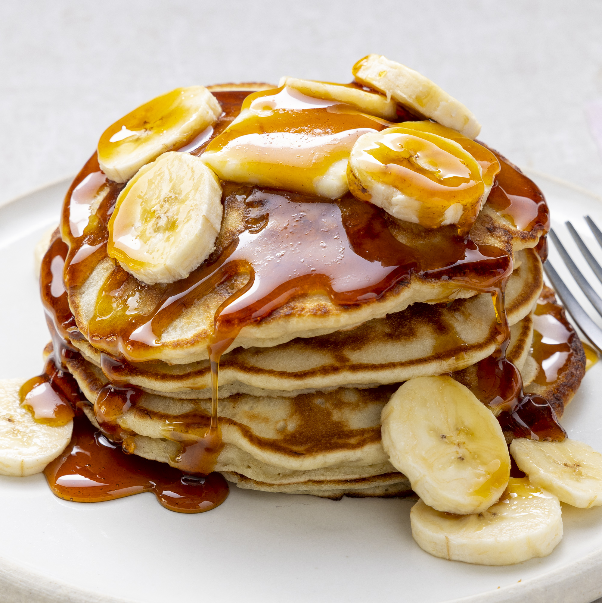

Banana Pancakes
Back Home.

Description
Crowd-pleasing banana pancake made from scratch that are ready in minutes. A fun twist on oedinary pancakes.
Ingredients
- 1 cup all-purpose flour
- 1 tablespoons white sugar
- 2 teaspoons baking powder
- ¼ teaspoon salt
- 1 egg, beaten
- 1 cup milk
- 2 tablespoons vegetable oil
- 2 ripe bananas, mashed
Steps
-
Combine flour, white sugar, baking powder, and salt in a bowl. Mix together egg, milk, vegetable oil, and bananas in second bowl.
-
Stir flour mixture into banana mixture; batter will be slightly lumpy.
-
Heat a lightly oiled griddle or frying pan over medium high heat. Pour or soop the batter onto the griddle, using approximately 1/4 cup for each pancake. cook until pancakes are golden brown, 3 to 5 minutes per side. Serve hot.
Nutrition Facts
Per Serving: 193 calories; protein 5g; carbohydrates 29.2g; fat 6.6g; cholesterol 34.3mg; sodium 245.9mg.
Back Home.